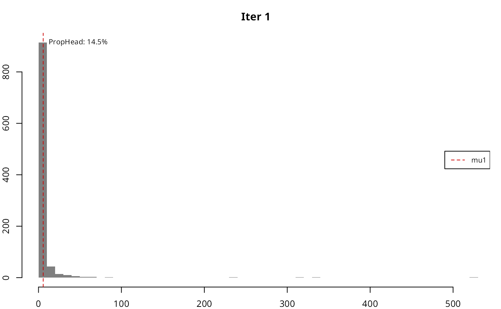
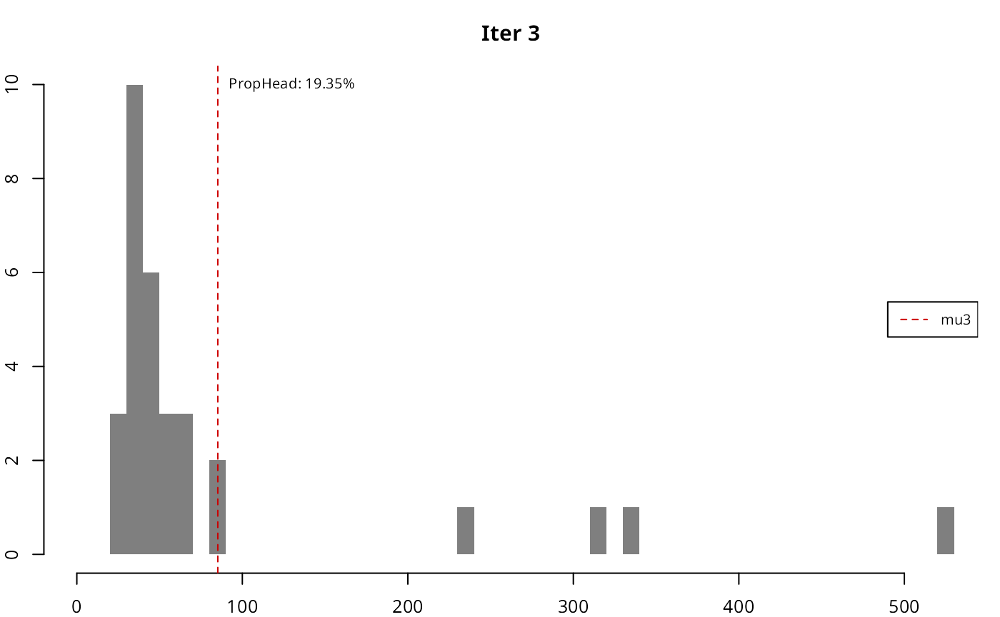
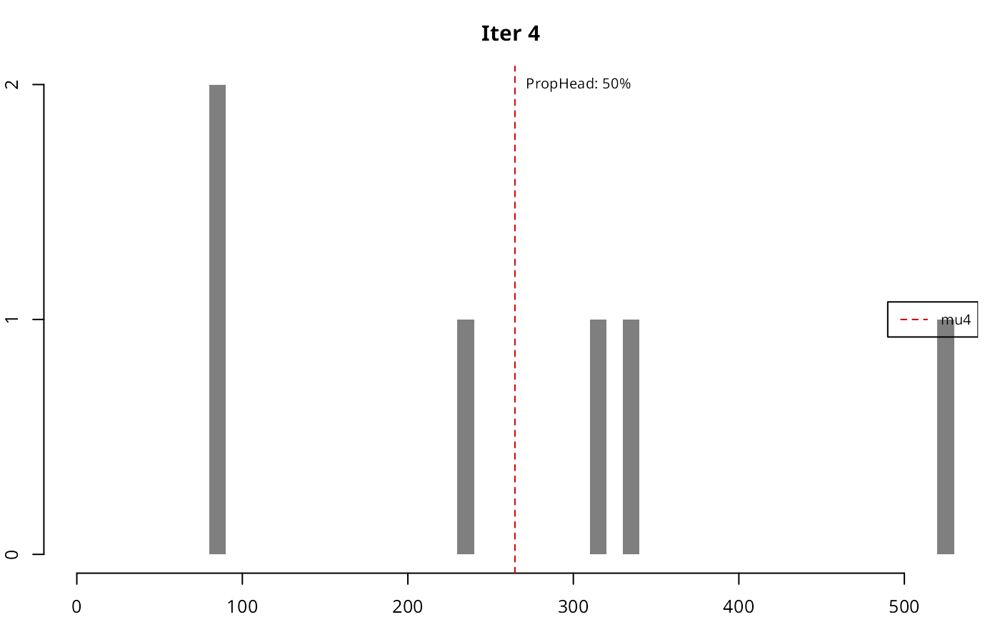
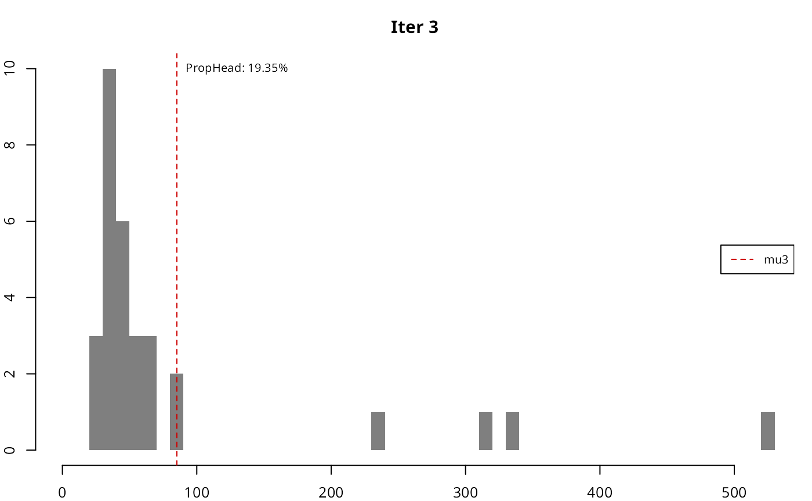
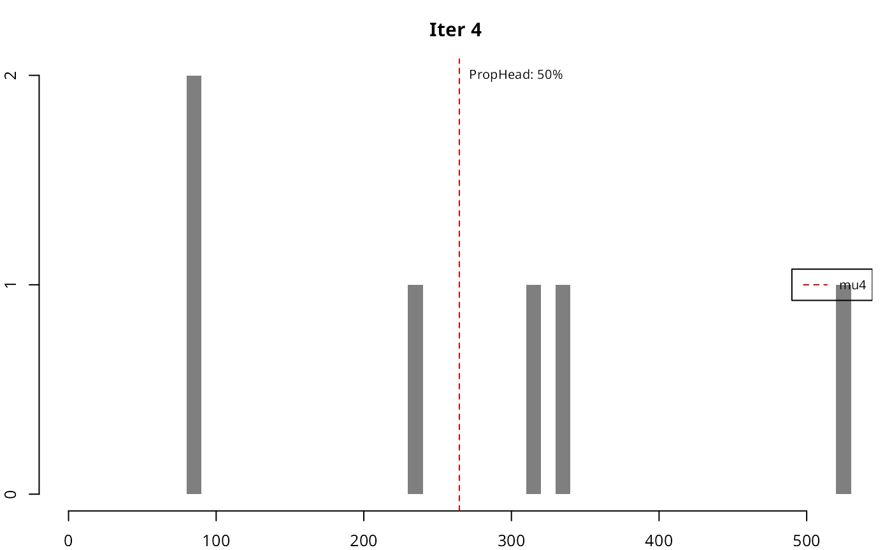
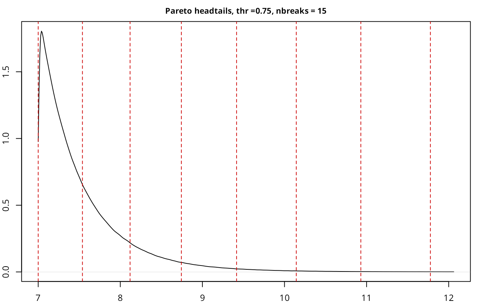
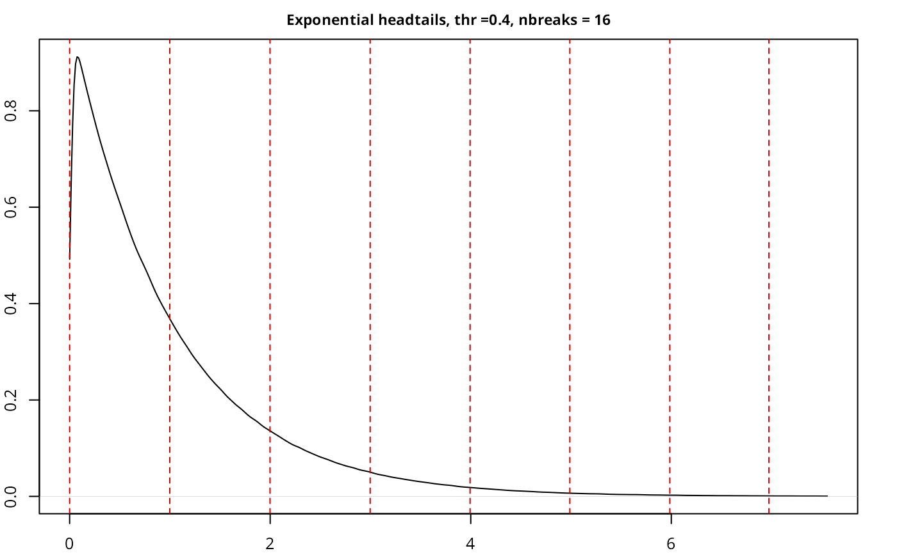
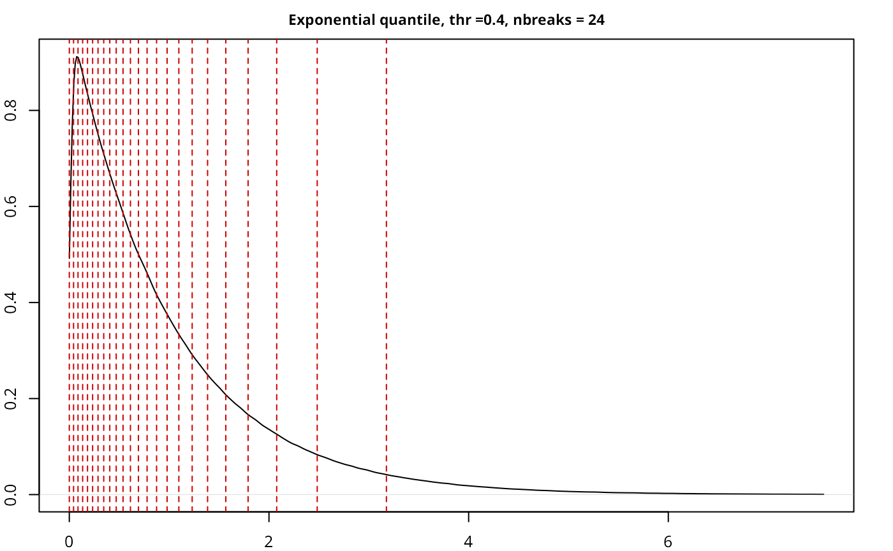
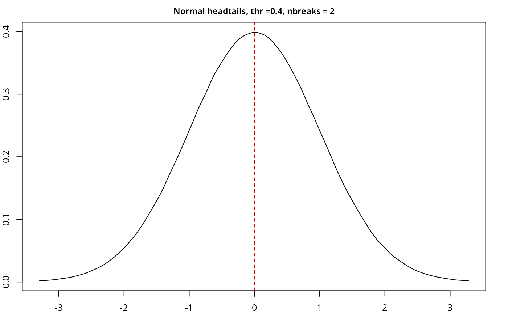

There are far more ordinary people (say, 80 percent) than extraordinary people (say, 20 percent); this is often characterized by the 80/20 principle, based on the observation made by the Italian economist Vilfredo Pareto in 1906 that 80% of land in Italy was owned by 20% of the population. A histogram of the data values for these phenomena would reveal a right-skewed or heavy-tailed distribution. How to map the data with the heavy-tailed distribution?Jiang (2013)
Abstract
This vignette discusses the implementation of the “Head/tail breaks” style (Jiang (2013)) in the classIntervals function. A step-by-step example is presented in order to clarify the method. A case study using spData::afcon is also included, as well as a test suite checking the performance and validation of the implementation.
Introduction
The Head/tail breaks, sometimes referred as ht-index (Jiang and Yin (2013)), is a classification scheme introduced by Jiang (2013) in order to find groupings or hierarchy for data with a heavy-tailed distribution.
Heavy-tailed distributions are heavily right skewed, with a minority of large values in the head and a majority of small values in the tail. This imbalance between the head and tail, or between many small values and a few large values, can be expressed as “far more small things than large things”.
Heavy tailed distributions are commonly characterized by a power law, a lognormal or an exponential function. Nature, society, finance (Vasicek (2002)) and our daily lives are full of rare and extreme events, which are termed “black swan events” (Taleb (2008)). This line of thinking provides a good reason to reverse our thinking by focusing on low-frequency events.
library(classInt)
#1. Characterization of heavy-tail distributions----
set.seed(1234)
#Pareto distribution a=1 b=1.161 n=1000
sample_par <- 1 / (1 - runif(1000)) ^ (1 / 1.161)
opar <- par(no.readonly = TRUE)
par(mar = c(2, 4, 3, 1), cex = 0.8)
plot(
sort(sample_par, decreasing = TRUE),
type = "l",
ylab = "F(x)",
xlab = "",
main = "80/20 principle"
)
abline(h = quantile(sample_par, .8) ,
lty = 2,
col = "red3")
abline(v = 0.2*length(sample_par) ,
lty = 2,
col = "darkblue")
legend(
"topleft",
legend = c("F(x): p80", "x: Top 20%"),
col = c("red3", "darkblue"),
lty = 2,
cex = 0.8
)
hist(
sample_par,
n = 100,
xlab = "",
main = "Histogram",
col = "grey50",
border = NA,
probability = TRUE
)
par(opar)Breaking method
The method itself consists on a four-step process performed recursively until a stopping condition is satisfied. Given a vector of values var the process can be described as follows:
- Compute
mu = mean(var). - Break
varinto thetail(asvar < mu) and thehead(asvar > mu). - Assess if the proportion of
headovervaris lower or equal than a given threshold (i.e.length(head)/length(var) <= thr) - If 3 is
TRUE, repeat 1 to 3 until the condition isFALSEor no more partitions are possible (i.e.headhas less than two elements expressed aslength(head) < 2).
It is important to note that, at the beginning of a new iteration, var is replaced by head. The underlying hypothesis is to create partitions until the head and the tail are balanced in terms of distribution.So the stopping criteria is satisfied when the last head and the last tail are evenly balanced.
In terms of threshold, Jiang, Liu, and Jia (2013) set 40% as a good approximation, meaning that if the head contains more than 40% of the observations the distribution is not considered heavy-tailed.
The final breaks are the vector of consecutive mu.
Step by step example
We reproduce here the pseudo-code1 as per Jiang (2019):
Recursive function Head/tail Breaks:
Rank the input data from the largest to the smallest
Break the data into the head and the tail around the mean;
// the head for those above the mean
// the tail for those below the mean
While (head <= 40%):
Head/tail Breaks (head);
End FunctionA step-by-step example in R (for illustrative purposes) has been developed:
opar <- par(no.readonly = TRUE)
par(mar = c(2, 2, 3, 1), cex = 0.8)
var <- sample_par
thr <- .4
brks <- c(min(var), max(var)) #Initialise with min and max
sum_table <- data.frame(
iter = 0,
mu = NA,
prop = NA,
n_var = NA,
n_head = NA
)
#Pars for chart
limchart <- brks
#Iteration
for (i in 1:10) {
mu <- mean(var)
brks <- sort(c(brks, mu))
head <- var[var > mu]
prop <- length(head) / length(var)
stopit <- prop < thr & length(head) > 1
sum_table = rbind(sum_table,
c(i, mu, prop, length(var), length(head)))
hist(
var,
main = paste0("Iter ", i),
breaks = 50,
col = "grey50",
border = NA,
xlab = "",
xlim = limchart
)
abline(v = mu, col = "red3", lty = 2)
ylabel <- max(hist(var, breaks = 50, plot = FALSE)$counts)
labelplot <- paste0("PropHead: ", round(prop * 100, 2), "%")
text(
x = mu,
y = ylabel,
labels = labelplot,
cex = 0.8,
pos = 4
)
legend(
"right",
legend = paste0("mu", i),
col = c("red3"),
lty = 2,
cex = 0.8
)
if (isFALSE(stopit))
break
var <- head
}
par(opar) 

As it can be seen, in each iteration the resulting head gradually loses the high-tail property, until the stopping condition is met.
| iter | mu | prop | n_var | n_head |
|---|---|---|---|---|
| 1 | 5.6755 | 14.5% | 1000 | 145 |
| 2 | 27.2369 | 21.38% | 145 | 31 |
| 3 | 85.1766 | 19.35% | 31 | 6 |
| 4 | 264.7126 | 50% | 6 | 3 |
The resulting breaks are then defined as breaks = c(min(var), mu(iter=1), ..., mu(iter), max(var)).
Implementation in classInt package
The implementation in the classIntervals function should replicate the results:
ht_sample_par <- classIntervals(sample_par, style = "headtails")
brks == ht_sample_par$brks
#> [1] TRUE TRUE TRUE TRUE TRUE TRUE
print(ht_sample_par)
#> style: headtails
#> [1.000295,5.675463) [5.675463,27.23693) [27.23693,85.17664) [85.17664,264.7126)
#> 855 114 25 3
#> [264.7126,523.6254]
#> 3As stated in Jiang (2013), the number of breaks is naturally determined, however the thr parameter could help to adjust the final number. A lower value on thr would provide less breaks while a larger thr would increase the number, if the underlying distribution follows the “far more small things than large things” principle.
opar <- par(no.readonly = TRUE)
par(mar = c(2, 2, 2, 1), cex = 0.8)
pal1 <- c("wheat1", "wheat2", "red3")
# Minimum: single break
print(classIntervals(sample_par, style = "headtails", thr = 0))
#> style: headtails
#> [1.000295,5.675463) [5.675463,523.6254]
#> 855 145
plot(
classIntervals(sample_par, style = "headtails", thr = 0),
pal = pal1,
main = "thr = 0"
)
# Two breaks
print(classIntervals(sample_par, style = "headtails", thr = 0.2))
#> style: headtails
#> [1.000295,5.675463) [5.675463,27.23693) [27.23693,523.6254]
#> 855 114 31
plot(
classIntervals(sample_par, style = "headtails", thr = 0.2),
pal = pal1,
main = "thr = 0.2"
)
# Default breaks: 0.4
print(classIntervals(sample_par, style = "headtails"))
#> style: headtails
#> [1.000295,5.675463) [5.675463,27.23693) [27.23693,85.17664) [85.17664,264.7126)
#> 855 114 25 3
#> [264.7126,523.6254]
#> 3
plot(classIntervals(sample_par, style = "headtails"),
pal = pal1,
main = "thr = Default")
# Maximum breaks
print(classIntervals(sample_par, style = "headtails", thr = 1))
#> style: headtails
#> [1.000295,5.675463) [5.675463,27.23693) [27.23693,85.17664) [85.17664,264.7126)
#> 855 114 25 3
#> [264.7126,391.279) [391.279,523.6254]
#> 2 1
plot(
classIntervals(sample_par, style = "headtails", thr = 1),
pal = pal1,
main = "thr = 1"
)
par(opar)The method always returns at least one break, corresponding to mean(var).
Case study
Jiang (2013) states that “the new classification scheme is more natural than the natural breaks in finding the groupings or hierarchy for data with a heavy-tailed distribution.” (p. 482), referring to Jenks’ natural breaks method. In this case study we would compare “headtails” vs. “fisher,” that is the alias for the Fisher-Jenks algorithm and it is always preferred to the “jenks” style (see ?classIntervals). For this example we will use the afcon dataset from spData package.
Let’s have a look to the Top 10 values and the distribution of the variable totcon (index of total conflict 1966-78):
| name | totcon | |
|---|---|---|
| EG | EGYPT | 5246 |
| SU | SUDAN | 4751 |
| UG | UGANDA | 3134 |
| CG | ZAIRE | 3087 |
| TZ | TANZANIA | 2881 |
| LY | LIBYA | 2355 |
| KE | KENYA | 2273 |
| SO | SOMALIA | 2122 |
| ET | ETHIOPIA | 1878 |
| SF | SOUTH AFRICA | 1875 |
opar <- par(no.readonly = TRUE)
par(mar = c(4, 4, 3, 1), cex = 0.8)
hist(afcon$totcon,
n = 20,
main = "Histogram",
xlab = "totcon",
col = "grey50",
border = NA, )
plot(
density(afcon$totcon),
main = "Distribution",
xlab = "totcon",
)
par(opar)The data shows that EG and SU data present a clear hierarchy over the rest of values. As per the histogram, we can confirm a heavy-tailed distribution and therefore the “far more small things than large things” principle.
As a testing proof, on top of “headtails” and “fisher” we would use also “quantile” to have a broader view on the different breaking styles. As “quantile” is a position-based metric, it doesn’t account for the magnitude of F(x) (hierarchy), so the breaks are solely defined by the position of x on the distribution.
Applying the three aforementioned methods to break the data:
brks_ht <- classIntervals(afcon$totcon, style = "headtails")
print(brks_ht)
#> style: headtails
#> one of 91,390 possible partitions of this variable into 5 classes
#> [147,1350.619) [1350.619,2488.6) [2488.6,3819.8) [3819.8,4998.5)
#> 27 10 3 1
#> [4998.5,5246]
#> 1
#Same number of classes for "fisher"
nclass <- length(brks_ht$brks) - 1
brks_fisher <- classIntervals(afcon$totcon, style = "fisher",
n = nclass)
print(brks_fisher)
#> style: fisher
#> one of 91,390 possible partitions of this variable into 5 classes
#> [147,693.5) [693.5,1474.5) [1474.5,2618) [2618,3942.5) [3942.5,5246]
#> 12 17 8 3 2
brks_quantile <- classIntervals(afcon$totcon, style = "quantile",
n = nclass)
print(brks_quantile)
#> style: quantile
#> one of 91,390 possible partitions of this variable into 5 classes
#> [147,604) [604,833.6) [833.6,1137.2) [1137.2,1877.4) [1877.4,5246]
#> 8 9 8 8 9
pal1 <- c("wheat1", "wheat2", "red3")
opar <- par(no.readonly = TRUE)
par(mar = c(2, 2, 2, 1), cex = 0.8)
plot(brks_ht, pal = pal1, main = "headtails")
plot(brks_fisher, pal = pal1, main = "fisher")
plot(brks_quantile, pal = pal1, main = "quantile")
par(opar)It is observed that the top three classes of “headtails” enclose 5 observations, whereas “fisher” includes 13 observations. In terms of classification, “headtails” breaks focuses more on extreme values.
The next plot compares a continuous distribution of totcon re-escalated to a range of [1,nclass] versus the distribution across breaks for each style. The continuous distribution has been offset by -0.5 in order to align the continuous and the discrete distributions.
#Helper function to rescale values
help_reescale <- function(x, min = 1, max = 10) {
r <- (x - min(x)) / (max(x) - min(x))
r <- r * (max - min) + min
return(r)
}
afcon$ecdf_class <- help_reescale(afcon$totcon,
min = 1 - 0.5,
max = nclass - 0.5)
afcon$ht_breaks <- cut(afcon$totcon,
brks_ht$brks,
labels = FALSE,
include.lowest = TRUE)
afcon$fisher_breaks <- cut(afcon$totcon,
brks_fisher$brks,
labels = FALSE,
include.lowest = TRUE)
afcon$quantile_break <- cut(afcon$totcon,
brks_quantile$brks,
labels = FALSE,
include.lowest = TRUE)
opar <- par(no.readonly = TRUE)
par(mar = c(4, 4, 1, 1), cex = 0.8)
plot(
density(afcon$ecdf_class),
ylim = c(0, 0.8),
lwd = 2,
main = "",
xlab = "class"
)
lines(density(afcon$ht_breaks), col = "darkblue", lty = 2)
lines(density(afcon$fisher_breaks), col = "limegreen", lty = 2)
lines(density(afcon$quantile_break),
col = "red3",
lty = 2)
legend("topright",
legend = c("Continuous", "headtails",
"fisher", "quantile"),
col = c("black", "darkblue", "limegreen", "red3"),
lwd = c(2, 1, 1, 1),
lty = c(1, 2, 2, 2),
cex = 0.8
)
par(opar)It can be observed that the distribution of “headtails” breaks is also heavy-tailed, and closer to the original distribution. On the other extreme, “quantile” provides a quasi-uniform distribution, ignoring the totcon hierarchy
In terms of data visualization, we compare here the final map using the techniques mentioned above. On this plotting exercise:
-
cexof points are always between1and5. - For the continuous approach, no classes are provided. This plot will be used as the reference.
- For all the rest of styles,
colandcexon each point is defined as per the class of that point.
custompal <- c("#FE9F6D99",
"#DE496899",
"#8C298199",
"#3B0F7099",
"#00000499")
afcon$cex_points <- help_reescale(afcon$totcon,
min = 1,
max = 5)
opar <- par(no.readonly = TRUE)
par(mar = c(1.5, 1.5, 2, 1.5), cex = 0.8)
# Plot continuous
plot(
x = afcon$x,
y = afcon$y,
axes = FALSE,
cex = afcon$cex_points,
pch = 20,
col = "grey50",
main = "Continuous",
)
mcont <- (max(afcon$totcon) - min(afcon$totcon)) / 4
legcont <- 1:5 * mcont - (mcont - min(afcon$totcon))
legend("bottomleft",
xjust = 1,
bty = "n",
legend = paste0(" ",
round(legcont, 0)
),
col = "grey50",
pt.cex = seq(1, 5),
pch = 20,
title = "totcon"
)
box()
plot(
x = afcon$x,
y = afcon$y,
axes = FALSE,
cex = afcon$ht_breaks,
pch = 20,
col = custompal[afcon$ht_breaks],
main = "headtails"
)
legend(
"bottomleft",
xjust = 1,
bty = "n",
legend = paste0(" ",
round(brks_ht$brks[2:6],0)
),
col = custompal,
pt.cex = seq(1, 5),
pch = 20,
title = "totcon"
)
box()
plot(
x = afcon$x,
y = afcon$y,
axes = FALSE,
cex = afcon$fisher_breaks,
pch = 20,
col = custompal[afcon$fisher_breaks],
main = "fisher"
)
legend(
"bottomleft",
xjust = 1,
bty = "n",
legend = paste0(" ",
round(brks_fisher$brks[2:6],0)
),
col = custompal,
pt.cex = seq(1, 5),
pch = 20,
title = "totcon"
)
box()
plot(
x = afcon$x,
y = afcon$y,
axes = FALSE,
cex = afcon$quantile_break,
pch = 20,
col = custompal[afcon$quantile_break],
main = "quantile"
)
legend(
"bottomleft",
xjust = 1,
bty = "n",
legend = paste0(" ",
round(brks_quantile$brks[2:6],0)
),
col = custompal,
pt.cex = seq(1, 5),
pch = 20,
title = "totcon"
)
box()
par(opar)


As per the results, “headtails” seems to provide a better understanding of the most extreme values when the result is compared against the continuous plot. The “quantile” style, as expected, just provides a clustering without taking into account the real hierarchy. The “fisher” plot is in-between of these two interpretations.
It is also important to note that “headtails” and “fisher” reveal different information that can be useful depending of the context. While “headtails” highlights the outliers, it fails on providing a good clustering on the tail, while “fisher” seems to reflect better these patterns. This can be observed on the values of Western Africa and the Niger River Basin, where “headtails” doesn’t highlight any special cluster of conflicts, “fisher” suggests a potential cluster. This can be confirmed on the histogram generated previously, where a concentration of totcon around 1,000 is visible.
Testing and benchmark
On this section the performance of the “headtails” implementation is tested, in terms of speed and handling of corner cases. A small benchmark with another styles is also presented.
Testing has been performed over the following distributions:
Heavy-tailed distributions
- Pareto
- Exponential
- Log-normal
- Weibull
- Log-Cauchy, also known as super-heavy tail distribution (Falk, Huesler, and Reiss (2011), p. 80, Fraga Alves, Haan, and Neves (2009))
Non heavy-tailed distributions
- Normal (non heavy-tailed)
- Truncated Normal (left-tailed)
- Uniform distribution
#Init samples
set.seed(2389)
#Pareto distributions a=7 b=14
paretodist <- 7 / (1 - runif(5000000)) ^ (1 / 14)
#Exponential dist
expdist <- rexp(5000000)
#Lognorm
lognormdist <- rlnorm(5000000)
#Weibull
weibulldist <- rweibull(5000000, 1, scale = 5)
#LogCauchy "super-heavy tail"
logcauchdist <- exp(rcauchy(5000000, 2, 4))
#Remove Inf
logcauchdist <- logcauchdist[logcauchdist < Inf]
#Normal dist
normdist <- rnorm(5000000)
#Left-tailed distr
leftnorm <-
sample(rep(normdist[normdist < mean(normdist)], 3), size = 5000000)
#Uniform distribution
unifdist <- runif(5000000)Let’s define a helper function and proceed to run the whole test suite:
testresults <- data.frame(
Title = NA,
style = NA,
nsample = NA,
thresold = NA,
nbreaks = NA,
time_secs = NA
)
benchmarkdist <-
function(dist,
style = "headtails",
thr = 0.4,
title = "",
plot = FALSE) {
init <- Sys.time()
br <- classIntervals(dist, style = style, thr = thr)
a <- Sys.time() - init
test <- data.frame(
Title = title,
style = style,
nsample = format(length(br$var),
scientific = FALSE, big.mark = ","),
thresold = thr,
nbreaks = length(br$brks) - 1,
time_secs = as.character(round(a,4))
)
testresults <- unique(rbind(testresults, test))
if (plot) {
plot(
density(br$var,
from = quantile(dist,.0005),
to = quantile(dist,.9995)
),
col = "black",
cex.main = .9,
main = paste0(
title,
" ",
style,
", thr =",
thr,
", nbreaks = ",
length(br$brks) - 1
),
ylab = "",
xlab = ""
)
abline(v = br$brks,
col = "red3",
lty = 2)
}
return(testresults)
}
opar <- par(no.readonly = TRUE)
par(mar = c(2, 2, 2, 2), cex = 0.8)
# Pareto----
testresults <- benchmarkdist(paretodist, title = "Pareto", plot = TRUE)
testresults <- benchmarkdist(paretodist, title = "Pareto", thr = 0)
testresults <- benchmarkdist(paretodist, title = "Pareto", thr = .75, plot = TRUE)
#Sample 2,000 obs
set.seed(1234)
Paretosamp <- sample(paretodist, 2000)
testresults <- benchmarkdist(Paretosamp,
title = "Pareto sample",
style = "fisher",
plot = TRUE)
testresults <- benchmarkdist(Paretosamp,
title = "Pareto sample",
style = "headtails",
plot = TRUE)
#Exponential----
testresults <- benchmarkdist(expdist, title = "Exponential", plot = TRUE)
testresults <- benchmarkdist(expdist, title = "Exponential", thr = 0)
testresults <- benchmarkdist(expdist, title = "Exponential", thr = 1)
testresults <- benchmarkdist(expdist, title = "Exponential",
style = "quantile", plot = TRUE)
#Weibull-----
testresults <- benchmarkdist(weibulldist, title = "Weibull", plot = TRUE)
testresults <- benchmarkdist(weibulldist, title = "Weibull", thr = 0)
testresults <- benchmarkdist(weibulldist, title = "Weibull", thr = 1)
#Logcauchy
testresults <- benchmarkdist(logcauchdist, title = "LogCauchy", plot = TRUE)
testresults <- benchmarkdist(logcauchdist, title = "LogCauchy", thr = 0)
testresults <- benchmarkdist(logcauchdist, title = "LogCauchy", thr = 1)
#Normal----
testresults <- benchmarkdist(normdist, title = "Normal", plot = TRUE)
testresults <- benchmarkdist(normdist, title = "Normal", thr = 0)
testresults <- benchmarkdist(normdist, title = "Normal", thr = 1, plot = TRUE)
#Truncated Left-tail Normal----
testresults <- benchmarkdist(leftnorm, title = "Left Normal", plot = TRUE)
testresults <- benchmarkdist(leftnorm, title = "Left Normal", thr = -100)
testresults <- benchmarkdist(leftnorm, title = "Left Normal", plot = TRUE, thr = 500)
#Uniform----
testresults <- benchmarkdist(unifdist, title = "Uniform", plot = TRUE, thr = 0.7)
testresults <- benchmarkdist(unifdist, title = "Uniform", thr = 0)
testresults <- benchmarkdist(unifdist, title = "Uniform", plot = TRUE, thr = 1)
par(opar)
# Results
knitr::kable(testresults[-1, ], row.names = FALSE)| Title | style | nsample | thresold | nbreaks | time_secs |
|---|---|---|---|---|---|
| Pareto | headtails | 5,000,000 | 0.40 | 15 | 0.6779 |
| Pareto | headtails | 5,000,000 | 0.00 | 2 | 0.6453 |
| Pareto | headtails | 5,000,000 | 0.75 | 15 | 0.6444 |
| Pareto sample | fisher | 2,000 | 0.40 | 12 | 0.0223 |
| Pareto sample | headtails | 2,000 | 0.40 | 8 | 3e-04 |
| Exponential | headtails | 5,000,000 | 0.40 | 16 | 0.5618 |
| Exponential | headtails | 5,000,000 | 0.00 | 2 | 0.4966 |
| Exponential | headtails | 5,000,000 | 1.00 | 17 | 0.5277 |
| Exponential | quantile | 5,000,000 | 0.40 | 24 | 0.8723 |
| Weibull | headtails | 5,000,000 | 0.40 | 16 | 0.5638 |
| Weibull | headtails | 5,000,000 | 0.00 | 2 | 0.5527 |
| Weibull | headtails | 5,000,000 | 1.00 | 17 | 0.5803 |
| LogCauchy | headtails | 4,991,187 | 0.40 | 6 | 0.625 |
| LogCauchy | headtails | 4,991,187 | 0.00 | 2 | 0.5271 |
| LogCauchy | headtails | 4,991,187 | 1.00 | 6 | 0.4966 |
| Normal | headtails | 5,000,000 | 0.40 | 2 | 0.5116 |
| Normal | headtails | 5,000,000 | 0.00 | 2 | 0.5385 |
| Normal | headtails | 5,000,000 | 1.00 | 17 | 0.6465 |
| Left Normal | headtails | 5,000,000 | 0.40 | 2 | 0.7009 |
| Left Normal | headtails | 5,000,000 | -100.00 | 2 | 0.7307 |
| Left Normal | headtails | 5,000,000 | 500.00 | 21 | 0.8224 |
| Uniform | headtails | 5,000,000 | 0.70 | 22 | 0.5737 |
| Uniform | headtails | 5,000,000 | 0.00 | 2 | 0.5205 |
| Uniform | headtails | 5,000,000 | 1.00 | 22 | 0.5684 |

The implementation works as expected, with a good performance given the size of the sample, and also compares well with another current implementations in classIntervals.
References
The method implemented in
classIntcorresponds to head/tails 1.0 as named in this article.↩︎